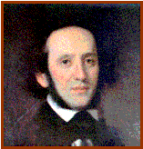

Felix MENDELSSOHN

|
Nace: 3-febrero-1809 en Hamburgo (Alemania) |
Muere: 4-noviembre-1847 en Leipzig (Alemania) |
||
|
 |
Al poco de nacer su familia se
establece en Berlín. Pronto dio muestras de su talento. Tuvo una gran
influencia de su hermana mayor, Fanny. Recibió clases de su madre, pianista
consumada y tuvo el apoyo de otros tutores como Carl Zelter, consejero
musical de Johann Goethe, que mantuvo con Mendelssohn una buena relación. En
1822 realizan un viaje por Suiza que despierta en Mendelssohn la pasión por
viajar. Componia sin para y ya en 1825 se consolida como gran genio con su
Octeto para cuerda en Mi bemol. En 1827 obtiene una plaza para estudiar en la
Universidad de Berlín. Ya con 20 años realiza una gira por Inglaterra, su
fama crece por Europa. Viaja luego a Italia. En 1834 se hizo cargo de la
orquesta Gewandhaus de Leipzig. En 1843 organiza el primer conservatorio de
Leipzig. En 1847 muere su hermana Fanny y Mendelssohn de derrumba. Ya débil
de salud acaba muriendo con 38 años. |
Obras principales: Música incidental: -La
primera noche de Walpurgis, Op. 60. -El
sueño de una noche de verano, Op. 61 (con su famosa Marcha Nupcial) Sinfonías: -Nº
2 en Si bemol “Lobgesang”, Op. 52. -Nº
3 en La menor “Escocesa”, Op. 56. -Nº
4 en La “Italiana”, Op.90 (1.Allegro
vivace, 2.Andante). -Nº
5 en Re menor “De la Reforma”, Op. 107. Oberturas: -Sueño
de una noche de verano, Op. 21. -Las Hébridas, Op. 26. -La
bella Melusina, Op. 32. Conciertos: -C.
para violín en Mi menor, Op. 64 (1º
Mov.) -C.
para piano nº 1 en Sol menor, Op. 25. -C.
para piano nº 2 en Re menor, Op. 40. Para piano: -Capricho
en Fa sostenido menor, Op. 5. -Romanzas
sin palabras, Libros 1-8. -Romanzas
sin palabras para piano y violonchelo en Re, Op.109. -Fantasía,
Op. 28 (2.Allegreto,
3.Presto). Otros: -Octeto en Mi bemol para cuerda, Op. 20. -2
sonatas para violonchelo. -6
cuartetos de cuerda. -2
quintetos de cuerda. -5
oratorios (Paulus, Op.36; Elijah (Obertura),
Op.70). -71
canciones: Escucha
Op.30
Nº 1, Op30
Nº 5 |
|
|
Podemos encuadrar a
este autor dentro del ROMANTICISMO |
|||